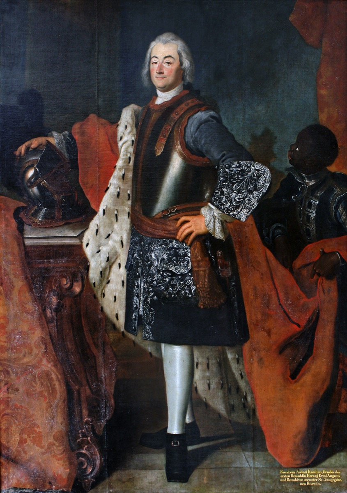

The prince marries an 'amusa' — the golden age starts to dim

December 1721 held two weddings in Cöthen, eight days apart, and between them they set the clock ticking on the golden age. On the third of the month, the Kapellmeister married his soprano. On the eleventh, the prince married his cousin — Friederica Henrietta of Anhalt-Bernburg, nineteen years old, a princess of the neighboring micro-state — and somewhere in the festivities, though no one present could have measured it, the tide of Bach's happiest employment quietly turned.
We know the turning not from any court document but from Bach himself, in the most quoted passage of the most revealing letter he ever wrote. Nine years later, established in Leipzig and thoroughly disenchanted with it, he unburdened himself to his childhood friend Georg Erdmann — by then a diplomat in distant Danzig, which perhaps made candor feel safe — and reviewed the fork in the road with a bitterness time had not dulled. At Cöthen, he wrote, he had intended to spend the rest of his life. "But it happened that the said Serenissimus married a Bernburg princess, and then it appeared as though the musical inclination of the said Prince had become somewhat lukewarm, especially since the new Princess seemed to be an amusa*."* An amusa: a woman estranged from the muses. In the entire surviving correspondence of Johann Sebastian Bach, it is the closest thing to a catty remark, and he saved it for the person he blamed for the end of paradise.
Whether the princess deserved the verdict is a question worth pausing on, because the timeline's honesty policy applies to Bach's own testimony as much as to anyone's. Friederica Henrietta left no account of herself; she was dead within sixteen months of her wedding, at twenty-one, just as Bach was securing his exit. And the court's musical decline had a second, less quotable cause that the account books document plainly: money. Anhalt-Cöthen was a small state under real fiscal pressure in these years — Prussian demands for troop subsidies weighed on all its neighbors — and a seventeen-piece virtuoso Capelle was the most compressible line in its budget. A young husband's attention drifting from his orchestra toward his bride, a treasury looking for savings, a Kapellmeister watching his ensemble thin: the amusa explanation is Bach's, and it may be no more than the human face he put on an actuarial process. The letter is a primary document of the highest value; it is also one aggrieved man's theory of his own career, and both things are true at once.
What is beyond dispute is the trajectory. From 1722 the Capelle's rolls began to shorten. The prince who had once taken his Kapellmeister to Carlsbad like a companion now had a court to reorganize and, soon, a wife's death to mourn. And Bach — who had signaled contentment in every recorded way for four years — began, for the first time since 1717, to scan the horizon. When the cantorate of Leipzig fell vacant with Kuhnau's death in June 1722, the Kapellmeister of Cöthen, holder of the proudest title in German music, did something that startled his contemporaries and requires the whole context of this card to understand: he applied for a schoolteacher's job.
The deeper lesson is the one the positions track keeps teaching, here at its sharpest. In the patronage economy, an artist's entire creative environment could hang from a single thread of one person's attention. Leopold's love of music had built the conditions for the Brandenburgs, the cello suites, and the Well-Tempered Clavier; the redirection of that love — toward a bride, under a budget — was enough to end the era. No committee, no market, no institution: one heart, changing. Bach spent the rest of his life working for institutions instead, and complained about them without cease. He had learned exactly what the alternative cost.
Continue with the era essay: Cöthen — the instrumental golden age, or follow the exit: the Leipzig audition.
Bach to Georg Erdmann, 28 Oct 1730 (New Bach Reader)
Wolff, The Learned Musician, ch. 7
→ full bibliography & links